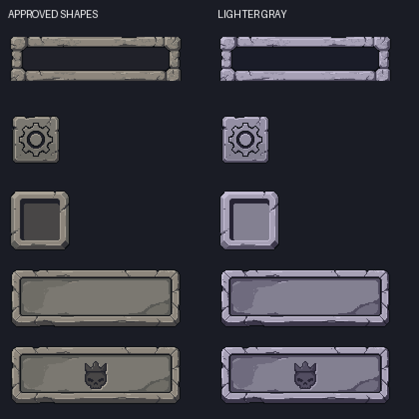

The prior cool-gray UI colors are restored. Exact silhouettes, sizes, chipped edges and engraving shapes are preserved. Direct native LibreSprite recolor; zero PixelLab generations. No merge.
Native 1× comparison · exactly 2× nearest-neighbor below

All 20 actual-Game zone/layout cases passed. Exact alpha-mask and LibreSprite round-trip checks passed for 13 PNGs. Existing compact-layout camera warning remains visible. Automated Unity evidence; no physical-device test.